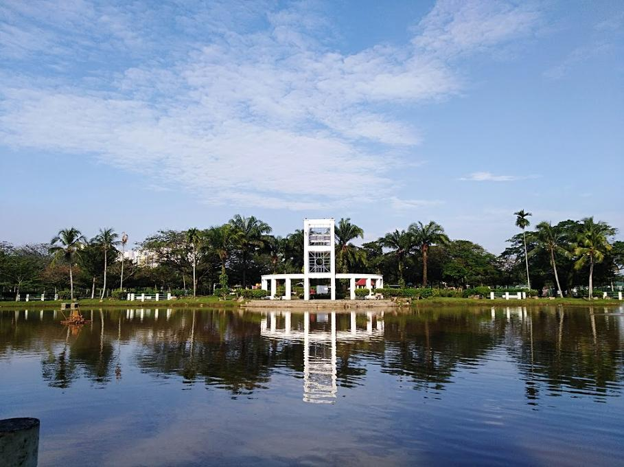
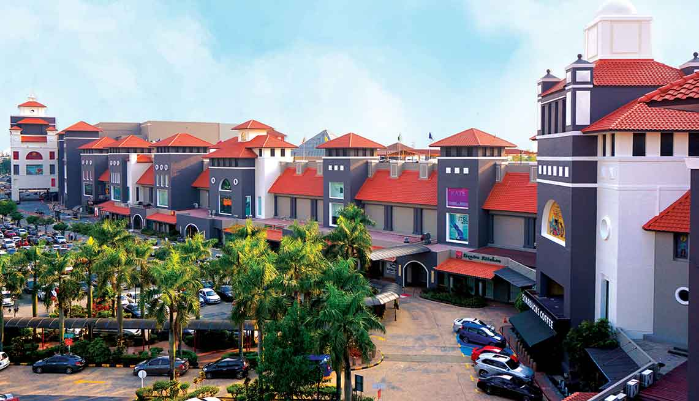
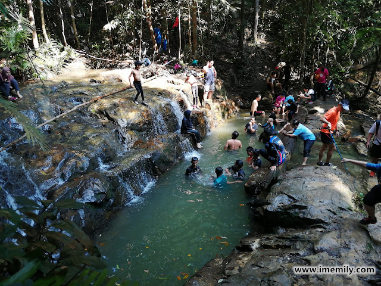
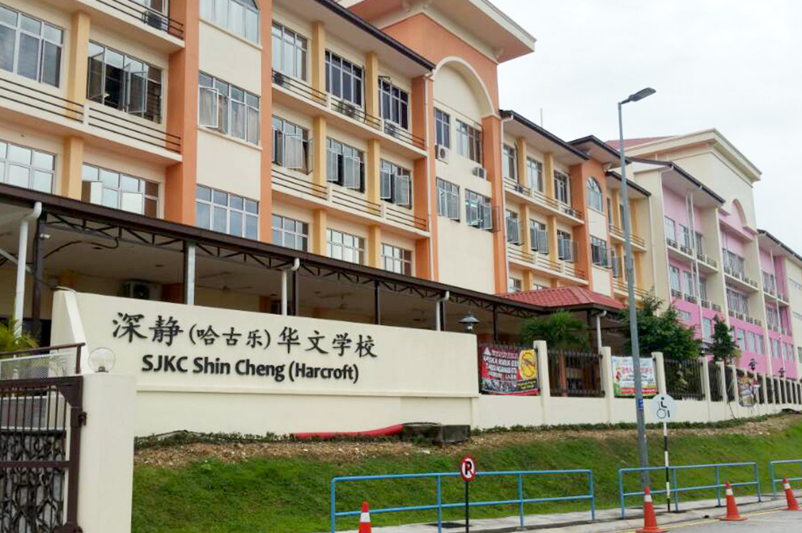

This is my housing area
Area Name: Puchong
Estimated size: 51.72km²
Landspace features
Wawasan Recreational park
Taman Wawasan Recreational Park is a 0.6 mile (1500-step) route located near Puchong, Selangor, Malaysia. This park
includes idylic sceneries of a lake, 3 different playgrounds and various sports facilities such as a basketball court.

Sunway Lagoon
Sunway Lagoon is a 88 acre waterpark located near Sunway Pyramid Mall. With over 80 different attractions such as
Malaysia's first surf simulator, the FlowRider in 2010; Malaysia's first 5D Waterplexx in 2012, and a very large
water ride, Vuvuzela, in 2013. The park has rides built for all ages.

IOI mall puchong
IOI mall puchong is a mall which features two wings, the old wing and the new wing which houses over 250 different
types of shops to eat, drink and shop from, the mall also features a carousell in the south court and is situated
near IOI mall puchong Lrt.

Wawasan Hill Trail
Wawasan hill trail (part of Ayer Hitam forest reserve) is a trail featuring challenging climbs and a gorgeous view
of Puchong at the top. Addtionally, a Blue lagoon can be found in the forest! The hill is also a forest reserve and
a variety of flora and fauna can be found with little mosquitos, but be weary of scorpions!

SJK (C) Shin Cheng (formerly Harcroft)
The primary school where I studied in. This school has a student population of over 1,200 students,
and students are taught with a Chinese syllabus.
